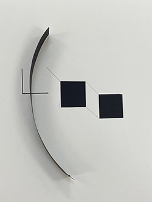
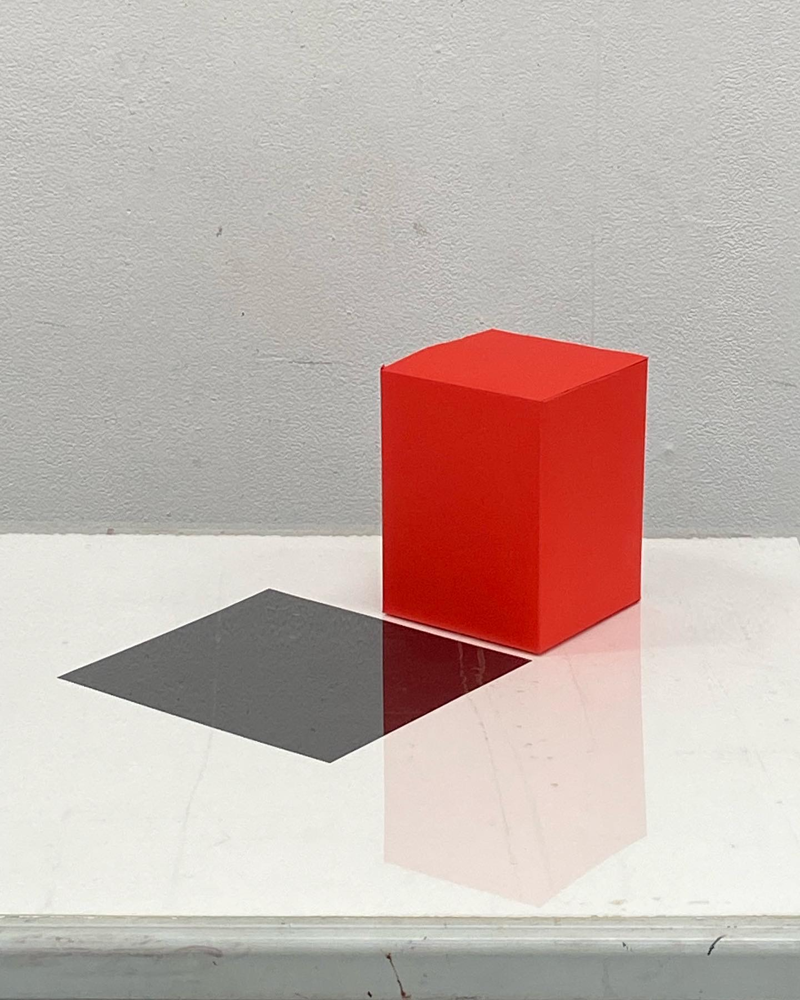
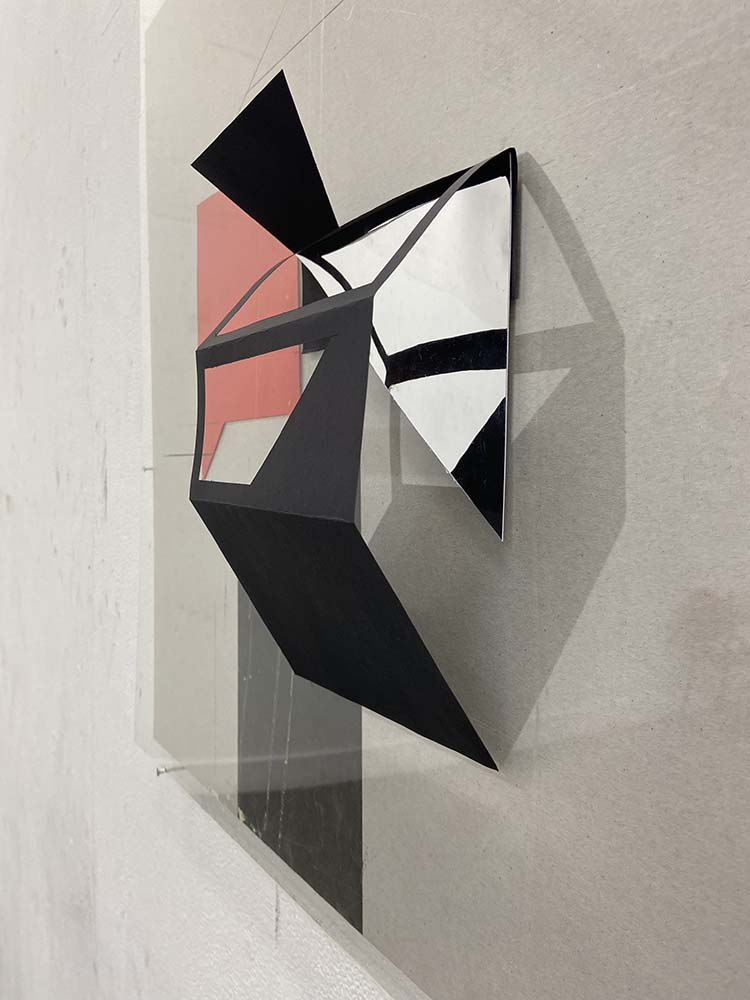

Expanded Drawing project (Ongoing...)
This project started with exploring the relationship between the 2D forms and 3D structures.
Artists and Theory influenced my work:
Margel Hinder exhibition in Art gallery of NSW, Modern in Motion
Robert Smithson’s work and writing
Frances Colpitt’s book, Minimal Art: The Critical Perspective


Not A Cube

